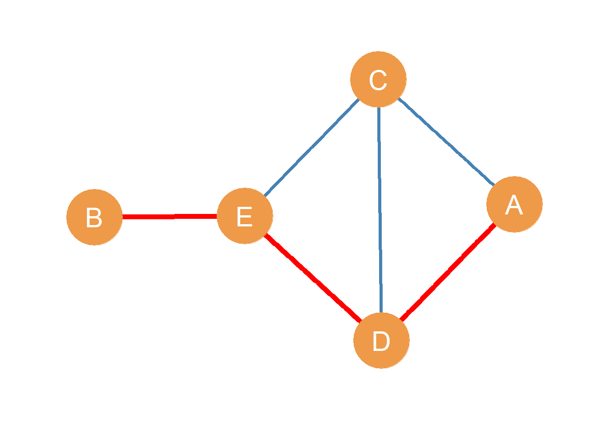

9 Indirect Connections
Yes, you have friends. But your friends also have friends (and those people also have friends…). This means that, sometimes, when representing concatenated social relationships in networks as graphs, we are not only interested in the direct connections between adjacent nodes. Instead, we are interested in indirect connections between nodes. That is, in some settings is important to note not just who you friends are, but also who the friends of your friends are, or even the friends, of your friends, of your friends (and so on).
These types of indirect relationships are behind the (now) popular idea of six degrees of separation. This is the widely held belief that if we follow a sequence of people and social ties, at the fifth or sixth step we may end up connected to a prominent or famous person (like Kevin Bacon). This is also the same idea behind the small world phenomenon popularized by psychologist Stanley Milgram in the 1960s (Milgram 1967), as when two strangers meet at airport and realize that they have an acquaintance in common (“such a small world!”). The idea is that while they were not previously connected in the network, they were indirectly connected via a common contact without realizing it. After reading this lesson, you’ll be able to say something more specific: Two people who meet at the airport and realize that they have a common acquaintance were connected via a path of length two without knowing it.
As indicated by this bit of jargon, graph theory can help us understand these types of indirect relationships in social networks. To do that, we must define a couple of concepts, and that is the idea of a path and connectivity between two nodes.
9.1 Paths
What is a path? The best way to begin is with an example. Take for instance, the undirected graph shown in Figure fig-paths1. In the Figure, nodes A and B are not adjacent (they are part of a null dyad). However, A can still reach B using a graph-theoretic path, written \(A-B\). For instance, if A wanted to pass along a message to B without it having to go through the same person twice, they could tell D (using the edge \(A \leftrightarrow D\)), who could tell E (using the edge \(D \leftrightarrow E\)) who could the tell B (using the \(E \leftrightarrow B\) edge). As noted above, this sequence of edges, namely \(A \leftrightarrow D, D \leftrightarrow E, E \leftrightarrow B\) defines a path between nodes A and B.
To define a path, we could also write the names of the edges separated by commas while omitting the arrows as in: \(A-B = \{AD, DE, EB\}\). In a path, the first node listed in the sequence is called the origin node and the last node listed is called the destination node. The nodes “in between” the origin and destination nodes in the path are called the inner nodes. Together, the origin and destination nodes are referred to as the end nodes of the path. So in the path \(A-B = \{AD, DE, EB\}\), node A is the origin node, node B is the destination node, nodes D and and E are the inner nodes, and both nodes A and B are the end nodes.
So what is a path?
In a graph, a path between two nodes A and B is a sequence of nodes and edges, such that the sequence begins with node A and ends with node B and only goes through each of the inner nodes in the path once.
Note that every path is actually a subgraph of the original graph as defined in sec-subgraphs! Except that the subgraph that defines a path will always contain a sequence of vertices and edges connected in a line.
9.2 Properties of Paths
In graph theory, paths between pairs of nodes have some unique properties:
- First, as mentioned in the definition, paths do not repeat nodes. This means that each of inner nodes in the path (e.g., the nodes that are not the origin and destination ones) only appears exactly twice when we list the edges that make up the path, like nodes D and E in the AB in the path listing \((AD, DE, EB)\). The origin and destination nodes, in contrast, appear exactly once.1
- Second, while it might not seem immediately obvious, because paths do not repeat nodes, they also do not repeat edges. As we will see later, this property helps differentiate paths from other less restricted types of edge sequences we may define in a graph featuring two nodes at the ends of it.
- Third, paths are characterized by their length. The length of a path (\(\mathcal{l}_{ij}\), where \(i\) is the origin node and \(j\) is the destination node) is given by the number of edges included in it. So the length of the path \((AD, DE, EB)\) is \(\mathcal{l}_{AB} = 3\) because there are three edges in the path.2
- Finally, there may be multiple paths connecting the same pair of nodes. For instance, In Figure fig-paths1 node A can also reach node B via the path \((AC, CE, EB)\) which is distinct from the one shown in red the Figure, but which also counts as a proper graph theoretic path (intervening nodes only appear twice in the listing, and the end nodes only appear once).
9.3 Pairwise Connectivity and Reachability
This leads us to the graph theory definition of connectivity for pairs of nodes:
In a graph, two nodes A and B are connected if there is at least one path (of any length), featuring node A as the origin node and node B as the destination node. Otherwise, the two nodes A andB are disconnected.
When a node can indirectly connect to another node via a path, we say that that the origin node can reach the destination node, or that the destination node is reachable by the origin node.
Note that once we understand the graph theory notion of connectivity, it becomes clear that the concept of adjacency (see sec-graphtheory) is a special (limiting) case of connectivity: Two nodes i and j are adjacent when there is a path of \(\mathcal{l_{ij}} = 1\) between them! Another way of saying this is that connectivity is a generalization of the notion of adjacency to allow for paths of length longer than one.
In a simple graph with no isolates, like that shown in Figure fig-paths1, it is easy to see that all node pairs are connected via a path of some length.
9.4 Shortest Paths
Consider the multiple ways node B can reach node C via a path in Figure fig-paths1. One possibility is the path defined by the edge sequence \((BE, ED, DA, AC)\). Another possibility is the path defined by the sequence \((BE, ED, DC)\). Yet another possibility is the path given by the edge sequence \((BE, EC)\). What’s the difference between these paths?
Well, for the first one, \(\mathcal{l}_{BC}^{(1)} = 4\), for the second one \(\mathcal{l}_{BC}^{(2)} = 3\) and for the last one \(\mathcal{l}_{BC}^{(3)} = 2\). The three paths are of different length, even though all three are proper graph-theoretic paths (they do not repeat inner nodes) and even though all three feature the same actors as the end nodes. Note that the length of the smallest possible shortest path between two non-adjacent vertices is always two!
Let’s say B was a spy who needed to send an urgent message to C even though they don’t know C directly. If B wanted the message to get to C in the fastest way, they would use the shortest path between them, which in this case is \((BE, EC)\). For any two nodes in the network, the shortest path is the smallest existing path (in terms of path length) that has those nodes as the end nodes. This means that for every pair of connected actors in the network, we can define a shortest path between them. The shortest paths between pairs of nodes are also called geodesics.
Sometimes, as with actors A and B in Figure fig-paths1, there will be multiple shortest paths between two pairs of nodes, because we end up with two or more paths that are “tied” in length (and thus all count as “shortest” paths). So for nodes A and B in Figure fig-paths1, the two shortest paths connecting them are of length three: \((AC, CE, EB)\) and \((AD, DE, EB)\).
9.4.1 Paths and Intermediation in Networks
Observe that, in Figure fig-paths1, if B really wanted to reach C via the shortest path, they will always have to go through node E. When this is the case, we say that E stands in the shortest path between B and C because it is an inner node in that path. So B is highly dependent on E to reach C. This makes E’s position in the network particular important for B, because they play the role of go-between or broker between B and the other actors in the network (Marsden 1983).
Because of this connection to communication efficiency and inter-mediation, shortest paths figure prominently in various measures of node position, called centrality measures we will deal with in sec-centrality. One such measure, called betweenness centrality is based on counting the number of shortest paths between every other pair of nodes that a given node stands on.
The length of the shortest path between two pair of non-adjacent vertices in the network can be thought of as the “degrees of separation” between them. This is also called the geodesic distance between two nodes. For instance, the shortest path between nodes A and B is of length three, so A is three degrees of separation away from B. As we saw in this example, there does not have to be only one shortest path between two nodes. Actors in the network can be connected via multiple distinct shortest paths as are A and B in Figure fig-paths1.
9.5 Cycles
Consider the edge sequence \((AD, DE, EC, CA)\) highlighted in red in Figure fig-cycle. What’s so special about it? Well, it looks like a path, because the inner nodes are only listed twice and so all the edges are unique. However, both the origin and destination nodes are the same!
Something like this sometimes happens with gossip. You start a rumor about someone by telling somebody else, and then a third person tells you the rumor that you started as if it was news to you! In this case, the rumor has traveled in the network via what is called a cycle.

A cycle is path,of length three or larger, featuring the same node in both the origin and destination slots. In an undirected graph, cycles of length three are also called triangles or closed triads (see sec-triads).
Some directed graphs, are distinctive because they don’t have any cycles. It doesn’t matter how hard you try, or how long you stare at them, there is no way you will find a directed path of minimum length three that begins and ends with the same node.
Directed graphs completely lacking in cycles are called directed acyclic graphs (DAGs). Note that tree graphs are by definition graphs that do not contain cycles (as discussed in sec-tree). Therefore every tree graph is also a DAG.
9.6 Graph Properties Based on Paths and Cycles
Given what we have learned so far, we can characterize key properties of the whole graph depending on the range (minimum and maximum lengths) of the shortest paths and cycles between pairs of nodes in it, as well as the existence of given paths and cycles with special features:
- The length of the longest geodesic (shortest path) between two nodes in a graph is called the graph diameter.
- The length of the shortest geodesic (shortest path) between two nodes in a graph is called the graph radius.
- For graphs that are not acyclic (e.g., they contain at least one cycle), the length of the longest cycle is called the graph circumference (Buckley and Harary 1990, 10).
- In the same way, the length of the shortest cycle in a graph with cycles is called the graph girth (Buckley and Harary 1990, 10). For a graph with a single cycle, the circumference is always equal to the girth.
- A path that includes every node in a graph is called a Hamiltonian path (also called a spanning path). Obviously not all graphs will contain such a path, graphs that do contain a Hamiltonian path are called traceable graphs.
- A cycle that visits each node in the graph exactly once is called Hamiltonian cycle (also called a spanning cycle). Obviously not all graphs will contain such a cycle, graphs that do contain a Hamiltonian cycle are called (you guessed it) Hamiltonian graphs.3
9.7 Walks and Trails
Not every sequence of nodes and edges that begins with one node and ends in another counts as a proper graph-theoretic path between two nodes.
For instance, looking at Figure fig-paths1, we could imagine a sequence of edges that started with one node and ended in another one without repeating edges, but repeating nodes. For instance, the sequence \((CA, AD, DC, CE, ED)\) has node C as the origin node and node D as the destination node, and all the edges in the sequence are unique. However, the origin node C and the destination node D also appear in the intervening chain, which means that they are listed three times. This fails the path test for this edge sequence. Sequences like this, featuring all unique edges but repeated nodes, are called trails.
In the same way, we could imagine some kind of message traveling across the edge sequence \((AD, DC, CE, ED, DC, EC, EB)\). This sequence has A as the origin node and has B as the destination node. However, the sequence goes through nodes C, D, and E twice; moreover, the edge DC appears twice, as does the edge EC. This means nodes C, D, and E appear four times in the listing which also fails the “is this a path?” test.
Arbitrary sequences of nodes and edges that begin with one node and end in another node but that feature both repeated nodes and edges along the way are called walks. If a walk begins and ends in the same node (like a cycle) then it is called a closed walk, otherwise, if a walk has different source and destination nodes, it is called an open walk (Buckley and Harary 1990, 10). The same distinction applies to trails. Note that a closed trail is the same as a cycle.
Walks, trails, and paths, form a hierarchy of increasingly less restricted “travels” from one node to another via edges in a graph (Borgatti 2005). Walks are the least restricted (they can include both repeated nodes and edges) and paths are the most restricted (they cannot include repeated nodes, which by implication also means they can’t include repeated links). Trails are in between. They are forbidden from repeating edges but can use multiple nodes more than once.
This means all paths are trails, and are trails are walks, but not all walks are trails, and not all trails are paths!
9.7.1 Keeping Walks and Trails Apart
One way to keep these distinctions straight is by thinking about different types of things that flow through a network and how they may use paths, trails, or walks (Borgatti 2005). Take for instance a virus like our (in)famous friend, Covid 19. A virus doesn’t decide where to go. It just gets transmitted from person to person every time pairs of people (or multiple pairs if it’s a mass gathering) come into contact with one another. The same person can become exposed to the virus multiple times via different links (so the chain repeats nodes). In the same way, the same link (your best friend) can expose you to the virus multiple times (so the chain repeats edges).
These considerations lead us to conclude that viruses form transmission chains in social networks that look like walks: they repeat both nodes and edges.
In this way, viruses are very much like (good old fashioned paper and coin) money even though you may not have thought of that connection before. If you buy something with a dollar, and the person you gave the dollar to buys something with it, the dollar can come back to you after flowing through the network for a while, so money also travels through networks via walks because it can repeat both nodes and edges.
9.7.2 Milgram’s Small World Experiment
How about trails? We already mentioned the idea of “six degrees of separation.” In the 1960s, the social psychologist Stanley Milgram (1967) designed an experiment where he sent almost two hundred packages containing a letter to a bunch of random people in Nebraska. The letter had the name of a stockbroker who lived in Boston and instructions that read: “If you know this person and where they live, send them this package; if you don’t know this person, forward it to someone you know who you think might know this person.” This is called the small world experiment.
The letters in Milgram’s experiment thus began to flow through indirect connections in social networks. Any one “chain” of letters however would go from one link in the network to another. Theoretically it could come back to a person who had already sent the letter (if one of the people forward in the chain didn’t know that person had sent the letter before), but no one would forward the letter back to the same person they had forwarded the letter before. This means that the packages in the small world experiment traveled via trails. They could repeat nodes (e.g., people) but not edges.
Gossip spreads through the network via trails too. You can hear the same piece of gossip from different friends (meaning that you are a repeated node in the trail), but you won’t hear the same piece of gossip from the same friend (meaning that edges are not repeated), unless they had memory loss!
So the differences between the ways viruses and gossip travel via social networks should help you keep walks and trails apart.
References
Borgatti, Stephen P. 2005. “Centrality and Network Flow.” Social Networks 27 (1): 55–71.
Buckley, Fred, and Frank Harary. 1990. Distance in Graphs. Addison-Wesley.
Marsden, Peter V. 1983. “Restricted Access in Networks and Models of Power.” American Journal of Sociology 88 (4): 686–717.
Milgram, Stanley. 1967. “The Small World Problem.” Psychology Today 2 (1): 60–67.
That means that we can check whether an edge sequence is a path by seeing if the inner nodes appear more than twice in the edge list (in which case, it is not path), or whether the end nodes appear more than once in the edge list (in which case, it is also not path).↩︎
So now you can tell your friends what “six degrees of separation” means in graph theory terms. If you can trace a path of \(\mathcal{l} = 6\) with you as the origin node, and at the other end there stands Kevin Bacon, then you are six degrees of separation from him↩︎
Hamiltonian paths, cycles, and graphs are named after the Irish Mathematician and Scientist William Rowan Hamilton.↩︎